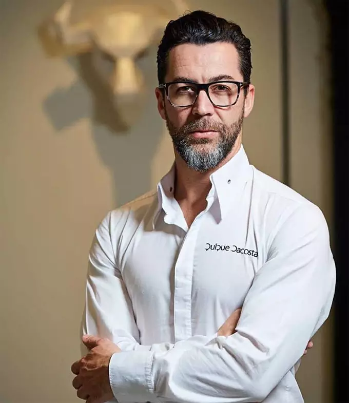

Director del Centro - Quique Dacosta
Cargo
Director del Centro de Turismo (CdT) Gandía desde 2022.
Biografía
Quique Dacosta es un chef de prestigio internacional y una de las figuras más influyentes de la gastronomía española contemporánea. Reconocido por su enfoque innovador y su capacidad para reinterpretar la cocina mediterránea, ha sido galardonado con tres estrellas Michelin, consolidando su posición como referente en la alta cocina.
En los últimos años, ha orientado parte de su carrera hacia la formación y la gestión educativa, con el objetivo de impulsar el talento joven y modernizar la enseñanza en el sector turístico. Su incorporación como director del CdT Gandía responde a una apuesta por integrar la excelencia gastronómica con la formación profesional.
Experiencia
-
Más de 20 años de trayectoria en alta cocina y restauración.
-
Fundador y director de varios conceptos gastronómicos reconocidos internacionalmente.
-
Asesor en proyectos de innovación culinaria y desarrollo turístico.
-
Ponente habitual en congresos gastronómicos internacionales.
-
Colaborador en programas de formación para profesionales del sector hostelero.
Gestión y liderazgo
Desde su llegada al CdT Gandía, ha impulsado una transformación del centro basada en la innovación, la digitalización y la conexión directa con el sector empresarial. Ha promovido la incorporación de metodologías prácticas, la participación de chefs invitados y la actualización constante de los contenidos formativos.
Además, ha establecido acuerdos de colaboración con restaurantes, hoteles y empresas turísticas de la Comunidad Valenciana, facilitando la inserción laboral del alumnado y reforzando el papel del centro como referente formativo.
Funciones como director
-
Definir la estrategia académica y gastronómica del centro.
-
Liderar proyectos de innovación en formación turística.
-
Coordinar el equipo docente y los programas educativos.
-
Representar institucionalmente al CdT Gandía.
-
Fomentar la excelencia, creatividad y empleabilidad del alumnado.
Visión
Su objetivo es posicionar el CdT Gandía como uno de los centros de formación turística más avanzados de España, combinando tradición, innovación y excelencia profesional.
